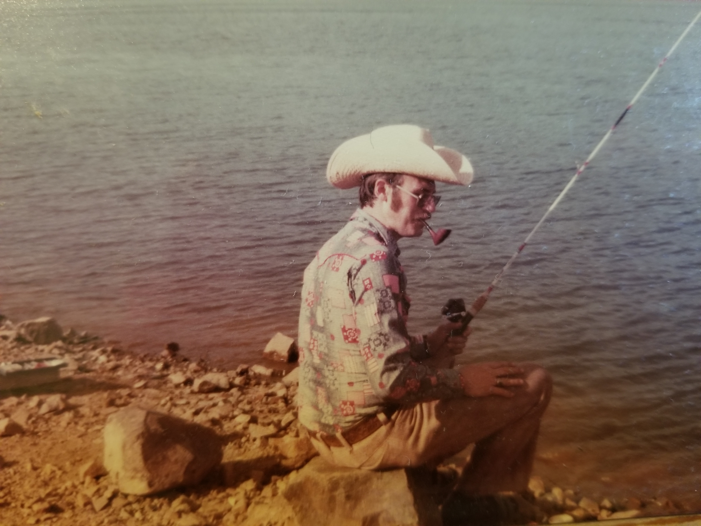

David fishing 1978
David and Mary Price, July 4th, 1964
David and daughter Sally,
December 28th, 2002
This is in memory of our dad David who was born and raised in Deluth, MN on February 19, 1939. He was in the army and stationed in San Antonio,TX in the early 1960s where he met our mother, Mary Helen Minor who was born and raised in San Antonio. They fell in love and were married on August 15, 1964. They had three children; Susie, Roger, and Sally. On October 14, 2018, our mother passed away from a stroke. Then our sister Susie passed away on September 24, 2021 due to complications caused by covid. Then sadly, only nine days later on October 3, 2021 we lost our father as well from complications caused by covid.